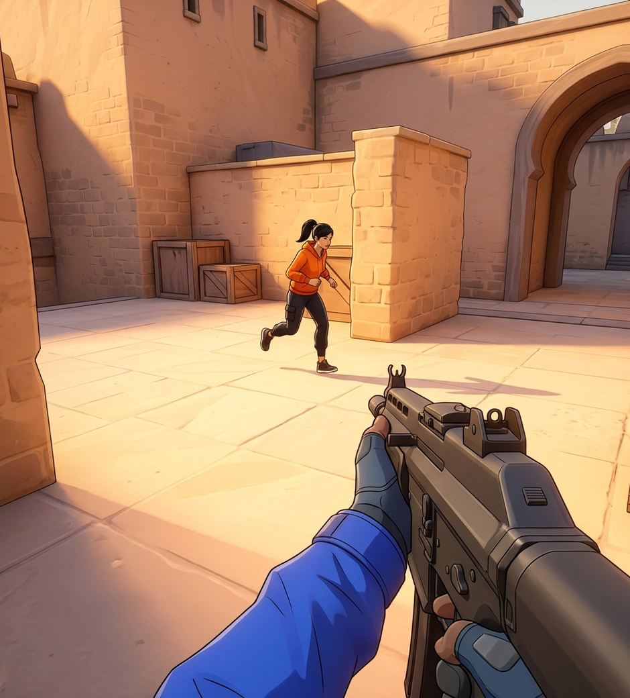
Online game netcode · Deck 1
Two players, one moment, three machines.
Follow one shot: where do its milliseconds go?
Handling & optimizing latency
in online games
- Presented by
- Long Dinh
- Built by
- Agent Fabric
Five words to read every diagram today.
One shot, three machines, three clocks
Good netcode must win four goals.
Each goal is something a player can see
- InstantMy key → my move, now this frame (≤ 16.7 ms)
- SmoothOthers glide, never jump Binh on An's screen
- FairHit what you saw on target = hit
- Cheat-proofOnly the server decides clients can't fake hits
Each design gets scored here, top right, from now on →
Shooters are the least forgiving genre.
~100 ms end to end is where players notice
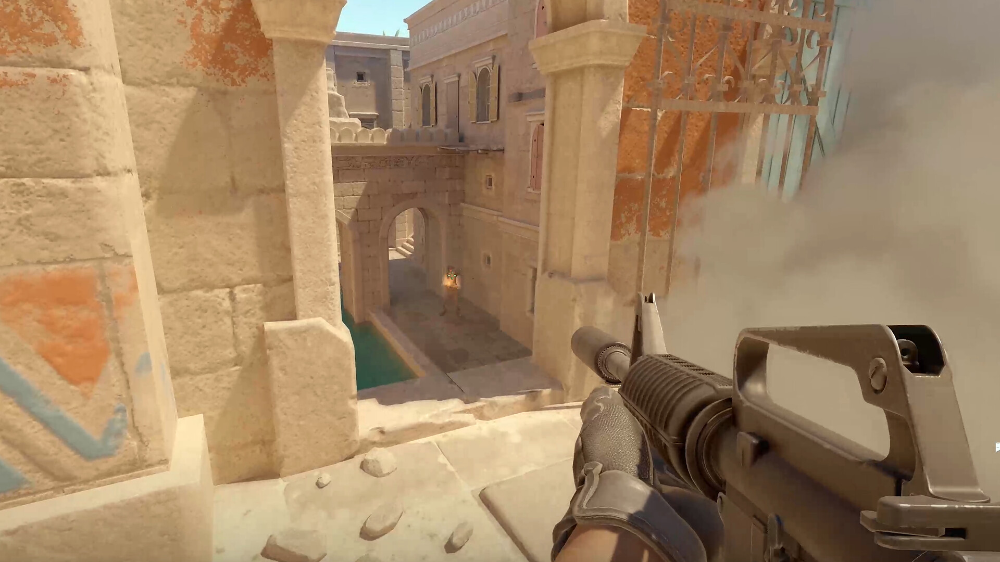
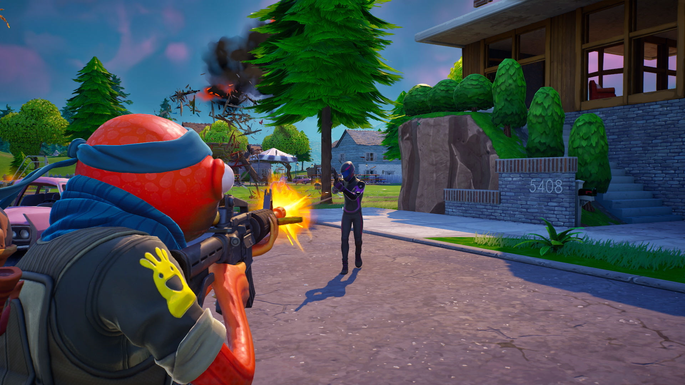
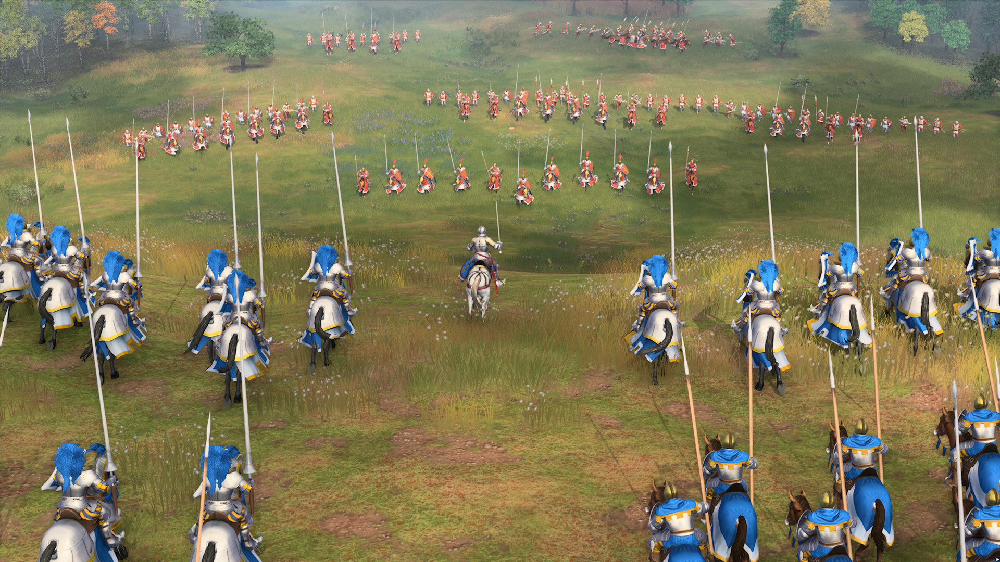
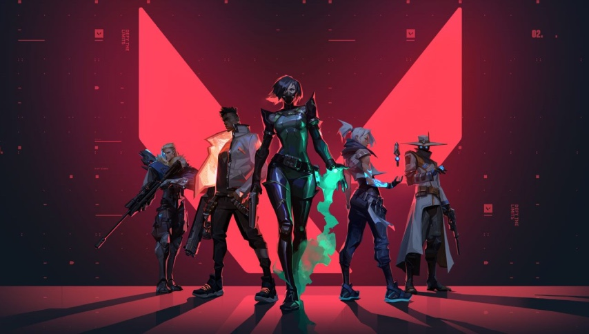
PROBLEM · Design 1: dumb client
Dumb client: every keypress waits a round trip.
An sends W, then waits for the server's x=11
- 1Press W key
- 2Send to server
- 3Wait for tick
- 4Server replies x=11
- 5Draw x=11 on screen
Typing over a slow SSH link: each key echoes late.
PROBLEM · Design 2: trust the client
Trusting the client feels instant but invites cheats.
Client sends results; the server can't check them
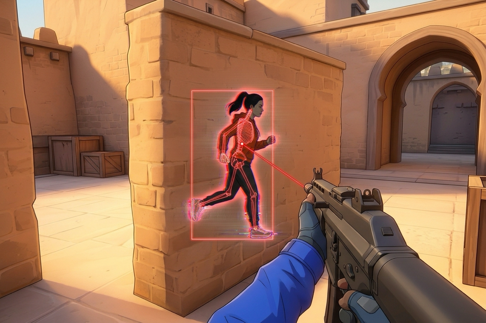
- 1Client decides hit
- 2Server relays damage
- 3Modded client lies
- 4Server cannot tell
FIX · Client-side prediction
Move An now; the server checks the same math later.
Client and server run the same movement code
- 1Press W, compute x=11
- 2Send input #1
- 3Server computes x=11
- 4Reply matches
Zalo shows your message at once; the server confirms later.
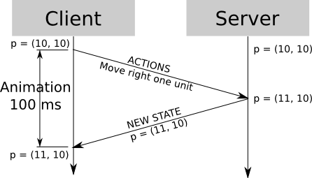
FIX · Server reconciliation
Server replies are old: replay newer inputs on top.
Every input gets a number: #1, #2, #3
- 1Press three inputs
- 2Reply describes #1
- 3Replay #2 and #3
- 4Screen stays x=13
git pull --rebase: take origin, replay your commits.
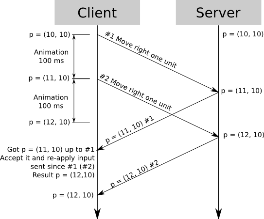
PROBLEM · Other players
Binh arrives in jumps, not motion.
An can't predict Binh's keys; snapshots come every 50 ms
- 1Snapshot arrives
- 2Binh teleports ahead
- 33 frames frozen
FIX · Entity interpolation
Show Binh 100 ms late: delayed, but smooth.
You can only glide toward a snapshot you already have
- 1Snapshots buffered
- 2Next snapshot pending
- 3Glide between two
- 4Delayed but smooth
A live match stream: a little behind the stadium, but it never stutters.
PROBLEM · Side effect of interpolation
Same instant, three truths: An's shot misses.
No one cheated; the machines disagree about when
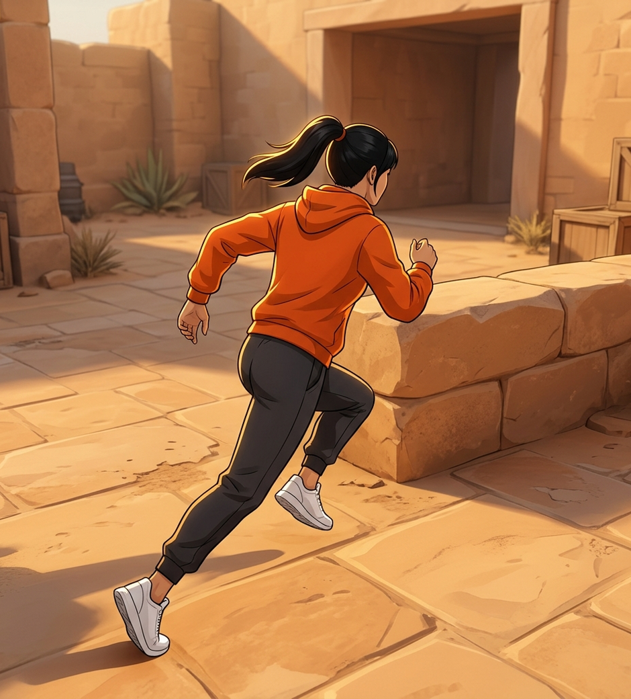
- 1An aims and fires
- 2Server checks now
- 3Shot misses
- 4Binh is safe
FIX · Lag compensation
The server rewinds Binh to what An saw.
Judge the shot in An's past, not in the server's now
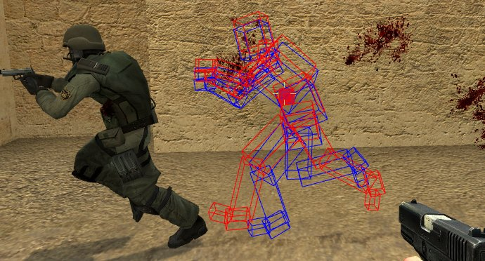
- 1History stored each tick
- 2Shot command arrives
- 3Rewind to buffer
- 4Hit confirmed on server
VAR: rewind to the moment of the pass.
RESULT
Four techniques, four green goals.
And the client still sends only inputs
and decides the hit itself
| Instant | Smooth | Fair | Cheat-proof | |
|---|---|---|---|---|
| Dumb client | ||||
| Trust client | ||||
| Prediction + reconciliation | ||||
| + Interpolation | ||||
| + Lag compensation | prediction | interpolation | lag comp | server authority |
MEASURE · One shot's budget
One shot costs ~190 ms; the biggest piece is ours.
From An's click to Binh seeing An fire (est.)
LEVER 1 · Send & tick rate
Faster snapshots shrink the buffer, at a price.
Buffer follows the send interval; cost follows the rate
- 120/s baseline
- 264/s shrinks buffer
- 3Cost at 64/s
- 4128/s lowers waits
- 5Cost at 128/s
More buses per hour: shorter wait, bigger bill.
REAL CASE · Riot, VALORANT
Riot cut peeker's advantage 141 → ~101 ms.
Peeker's advantage: An steps out and sees Binh first
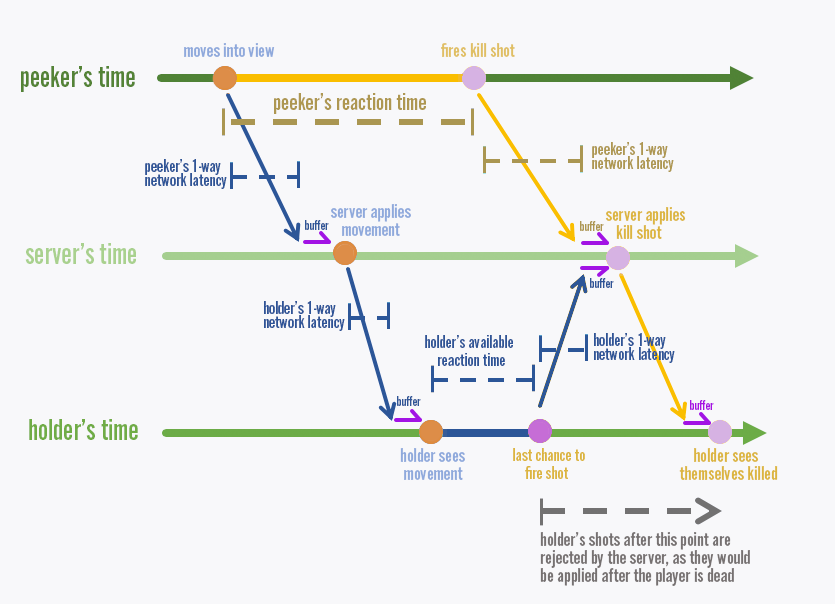
Assumed
RTT 35 ms
goal, 70% playersAssumed
Server buffer 2 framesAssumed
Client buffer 3 frames
LEVER 2 · Client frame rate
Client frame rate is latency too.
Backend can't set it, but must count it
- 160 FPS frames
- 2144 FPS frames
- 3An draws sooner
- 4Binh draws sooner
A train every 6.9 ms instead of every 16.7 ms.
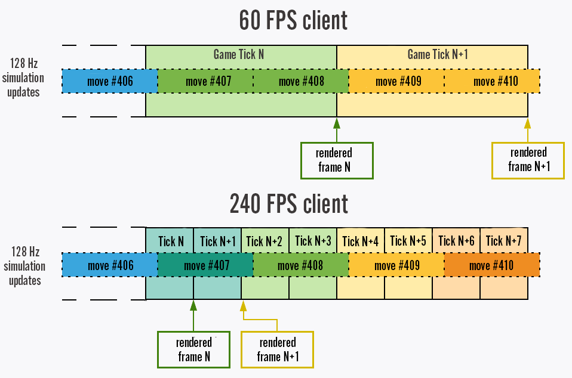
LEVER 3 · Server location
For Vietnam, in-country servers beat fragile cables.
6 subsea cables · ~10 incidents/year
- 1Six subsea cables
- 2Frequent cable faults
- 3Singapore ping range
- 4Host in Vietnam
HOW · Choosing the region
Ping every region, pick the one fair to both.
UDP beacons: the ping command (ICMP) is often deprioritised
- 1Ping UDP beacons
- 2Collect RTT maps
- 3Relax max latency
- 4Pick best region
Picking a café that is fair to both friends.
HOW · Far from every region
Get packets onto a private backbone early.
Lower ping and jitter; DDoS absorbed at the edge
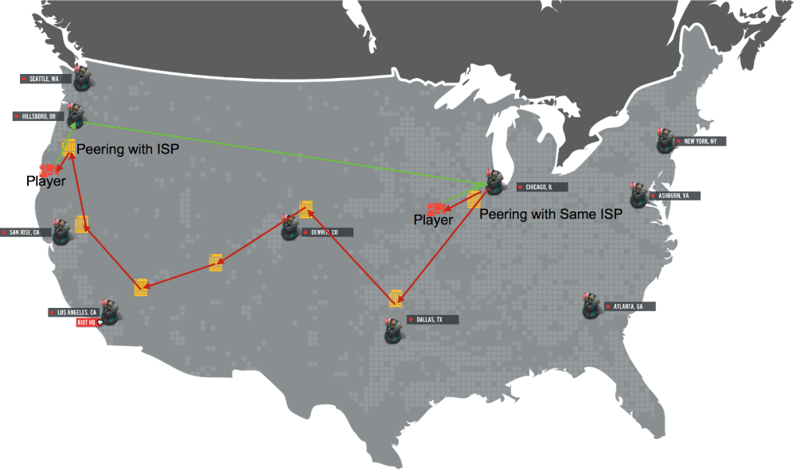
- Riot Direct · NA <80 ms: 31% → 80% (Quartz)
- Riot Direct · 500 Gb/s DDoS absorbed
- Valve SDR · server IP hidden
KEEP IT · Server tick health
A late tick is latency you added.
At 128 Hz every tick must finish within 7.8 ms
s = s[:0]reuse buffers- sync.Poolpool packets
- GOMEMLIMITtame the GC
- ReadBatchbatch UDP
- 1Ticks vs budget
- 2GC spike impact
- 3Zero-alloc loop
- 4Measure percentage
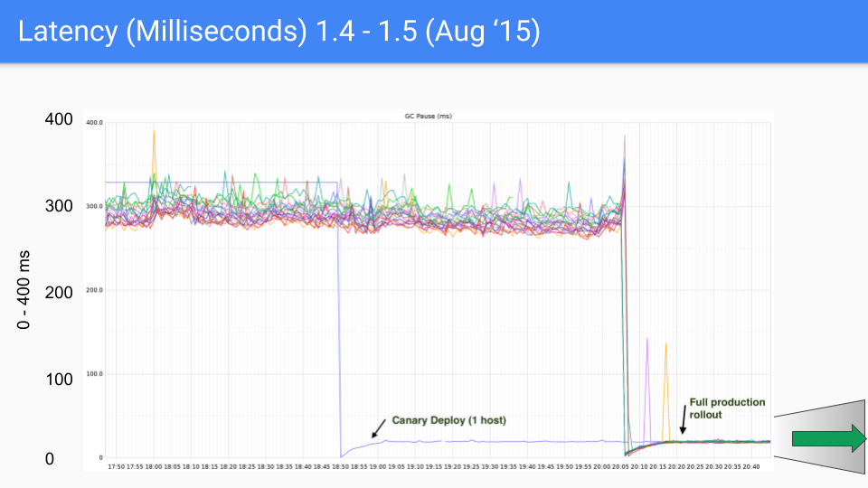
KEEP IT · Measure the tail
Averages hide the players who lag.
UDP RTT from clients, by percentile and ISP
- 1Distribution not average
- 2Expose latency tail
- 3Split by ISP
- 4Reproduce in CI
OTHER GENRES
Fighting games roll back; strategy games lockstep.
No server referee: every machine runs the same simulation
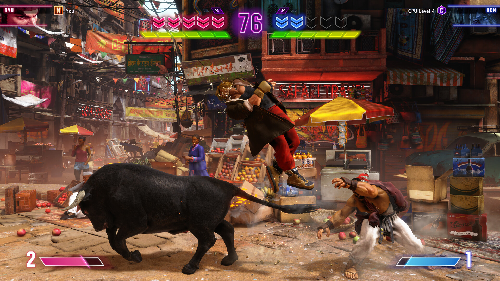
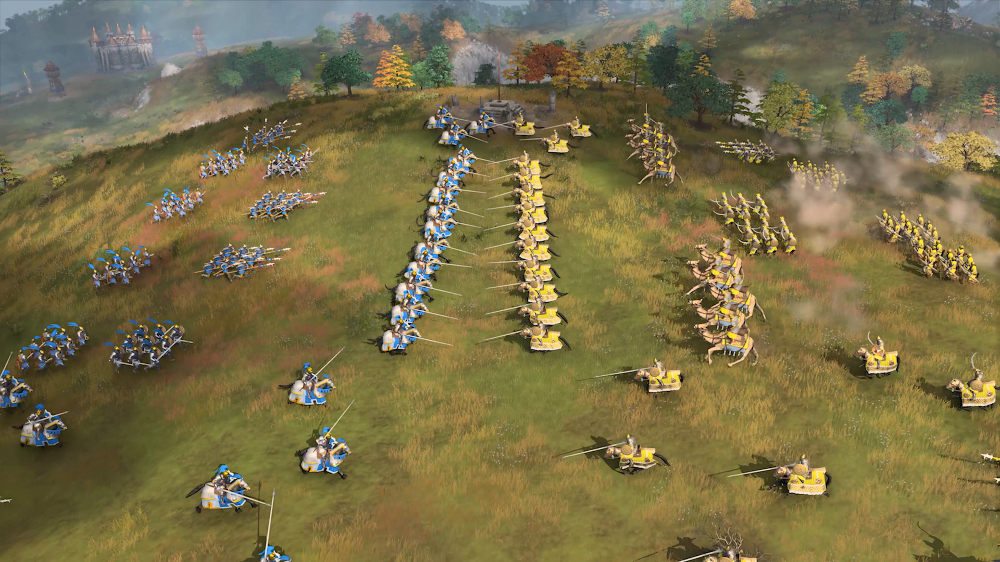
RECAP
Four techniques, four goals; three levers for speed.
190 → ~45 ms est. · never zero
| Instant | Smooth | Fair | Cheat-proof | |
|---|---|---|---|---|
| Prediction + reconcile | ||||
| Interpolation | ||||
| Lag compensation | ||||
| Server authority |
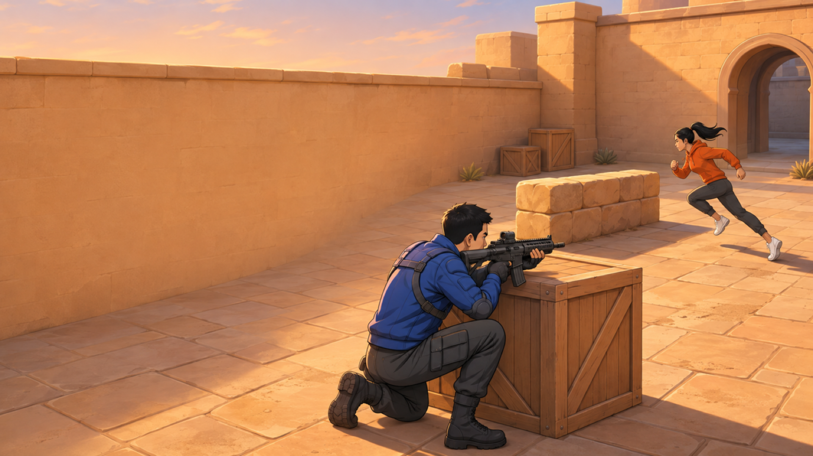
One shot, click → Binh sees An fire est.
- network: distance
- design choice
- changed by the lever
Fair to the shooter means unfair-looking to the target.
Appendix · edge case of slide 12
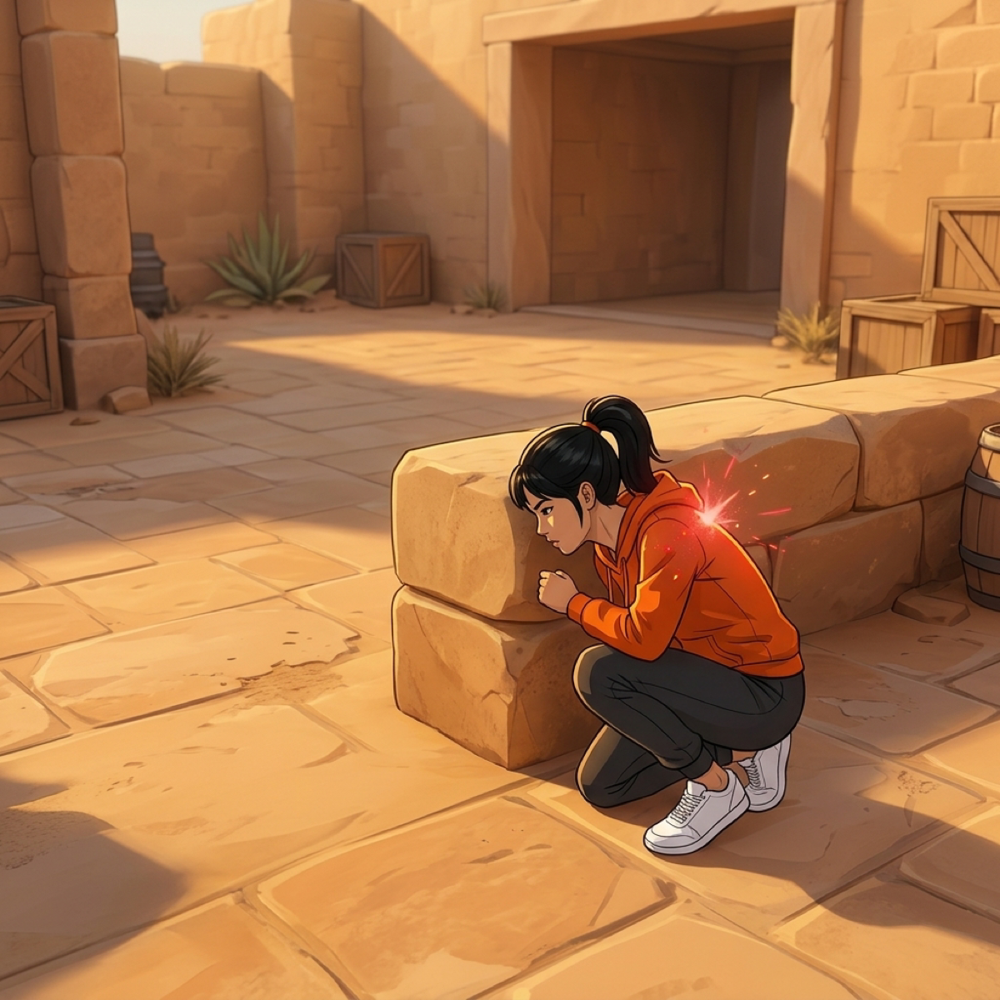
Every glitch has a mechanism.
Appendix · symptoms players report
| Symptom | Mechanism | Fix |
|---|---|---|
| Rubber-band | Correction snap | Smooth over N frames |
| Shot behind wall | Rewind window | Cap rewind |
| Teleport | Buffer starved | Adaptive buffer |
| Desync | Non-determinism | Fixed-point + checksum |
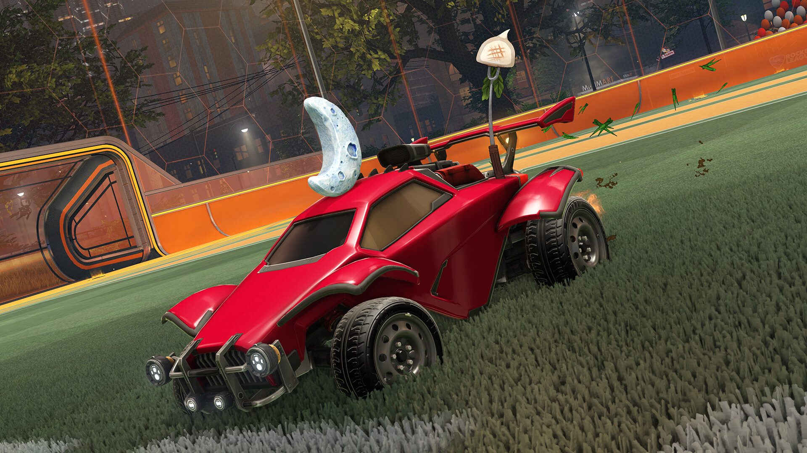
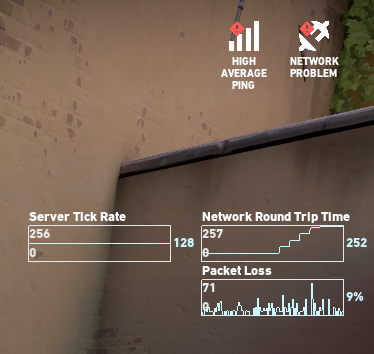
Sub-tick: precise input, same 64 Hz world.
Appendix · CS2
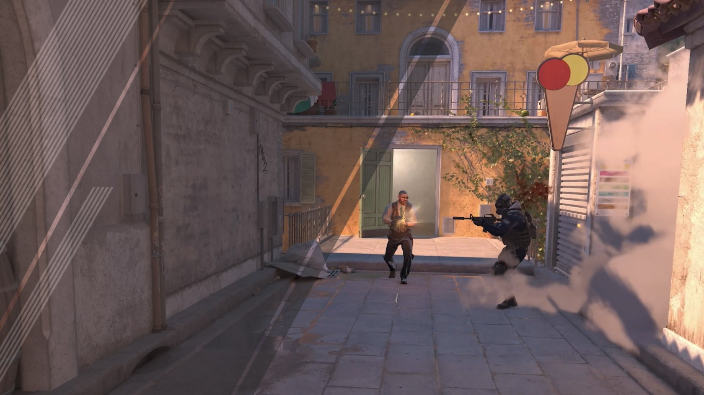
Compression: 17.4 Mbps → ~15 kbps at rest.
Appendix · bandwidth
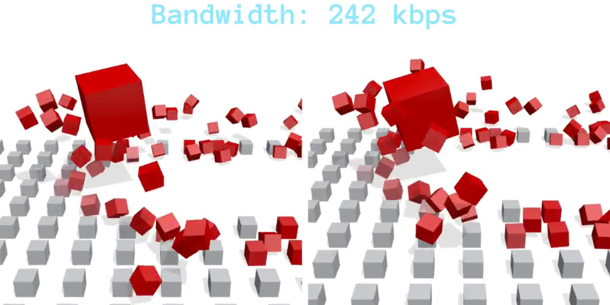
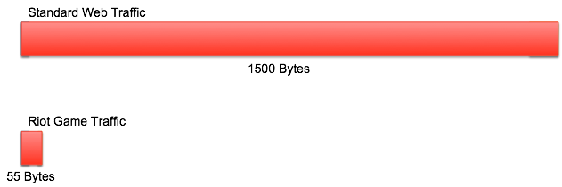
Input delay hides frames; rollback fixes the rest.
Appendix · fighting games
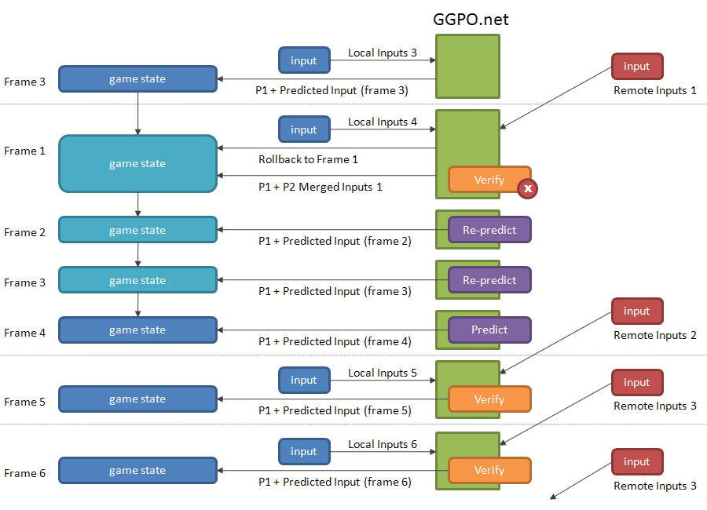
Send only what each player can see.
Appendix · interest management
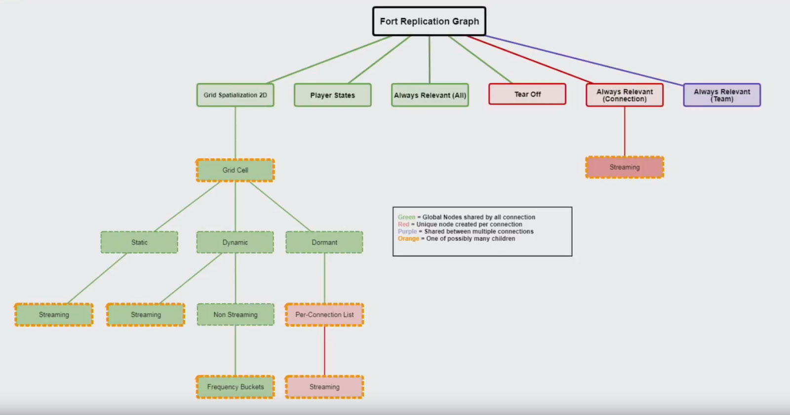
UDP first; WebTransport for browsers.
Appendix · transport
A video call skips a lost frame; it never waits to resend it.
Budget derivation, segment by segment.
Appendix · all values ms, est.
| Segment | Rule | Start | Send 64/s | 128 Hz | 144 FPS |
|---|---|---|---|---|---|
| An frame | ½ × 1000/FPS | 8 | 8 | 8 | 3.5 |
| Network up | ½ RTT | 20 | 20 | 20 | 20 |
| Tick wait | ½ × 1000/tick | 8 | 8 | 4 | 4 |
| Send wait | ½ × 1000/send rate | 25 | 8 | 4 | 4 |
| Network down | ½ RTT | 20 | 20 | 20 | 20 |
| Interp buffer | 2 × 1000/send rate | 100 | 31 | 16 | 16 |
| Binh frame | ½ × 1000/FPS | 8 | 8 | 8 | 3.5 |
| Total | ≈190 | ≈103 | ≈80 | ≈71 | |